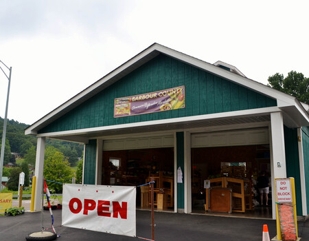
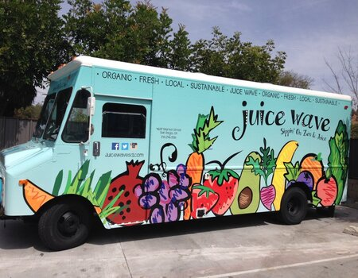

Our Story
Our company was first built in 1994. We started out as just a market for farmers to sell all of their crops. In the year 1999, we started to grow a lot more and built more locations in California. Around 2014, we started our food truck business and that is where we got our most popularity from customers.
What We Do
Bountiful Foods is small business specializing in organic, locally grown foods. We are physically located in Carlsbad, California, however, we have many food trucks that cover the coastal area from Los Angeles to San Diego.

The Fruit Truck picks up fresh fruit at farms and orchards and delivers it directly to communities across the country. You can reserve your fruit online and pick it up at the scheduled Fruit Truck delivery event in your community.

We sell fruits and produce directly from the farmers in the area, but also use some national and international suppliers. We cater to walk in traffic at our storefront in Carlsbad and, of course, our food trucks. We deliver and manage those orders on the phone and via the website. Our mission is to provide fresh and healthy food , including organic, made to order, fruit drinks and fruit bags, to the local population and to tourists visiting the coastal areas.